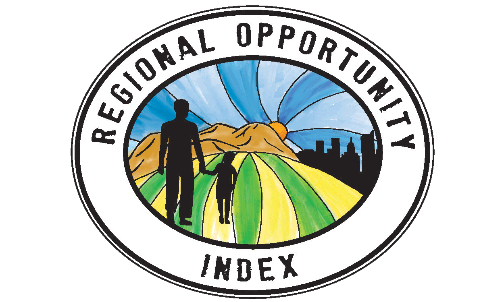

Putting Youth
on the Map
An information resource for youth and adults working to ensure youth well-being in California.

An information resource for youth and adults working to ensure youth well-being in California.
An interactive mapping tool used to target investments to the people and places that need it most. 
Democratizing data to help build stronger, more representative civic communities throughout California.